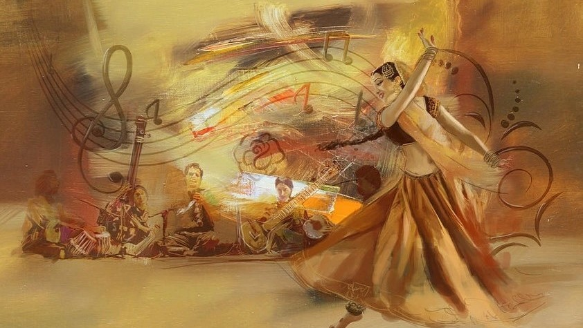

RAAG ALHAIYA BILAWAL
Raag Alhaiya Bilawal is a Hindustani classical raga that is part of the Bilawal Thaat. It is a Janak raga, which means it is a root raga that the Bilawal Thaat is named after.It creates a very pleasing and serene atmosphere.

RAAG BRINDAVANI SARANG
Raag Brindavani Sarang is a popular Hindustani raga from the Sarang family. It is a simple and popular raga, often sung in the afternoon between 12 pm and 3 pm, and is particularly suited for the summer season.

RAAG BIHAG
Raag Bihag is a popular Hindustani classical raga that is known for its sweet and melodious sound. It is a very accessible raga, making it easy for beginners to learn and sing.Raag Bihag is usually in sung between 9 pm to 12 am.

RAAG ASAVARI
Raag Asavari is a fundamental raag in the Hindustani music tradition, characterized by its unique melodic structure and emotional depth.Rag Asavari is considered a morning rag, evoking feelings of serenity, calmness, and introspection.

RAAG KEDAR
Raag Kedar, also known as Kedara, is a Hindustani classical raga named after Lord Shiva. It is a highly respected and loved raga in Indian classical music, characterized by its melodious turns and complex melodic gestures.
RAAG TILAK KAMOD
Raag Tilak Kamod is a Hindustani classical raga that emerges from the Khamaj thaat.he raga is known for its melodious and playful nature, with a unique blend of emotions and sentiments.

RAAG BHAIRAV
Raag Bhairav is considered the first raga in Indian classical music, also known as Aadi raag. It is a majestic and masculine raga that creates a meditative atmosphere, often performed during the early morning hours.
RAAG BHAIRAVI
Raag Bhairavi is a Hindustani classical Sampurna raga of Bhairavi Thaat. It is a popular and widely used raga in Indian classical music, particularly in the morning hours. Raga Bhairavi is often referred to as the queen of morning Ragas.